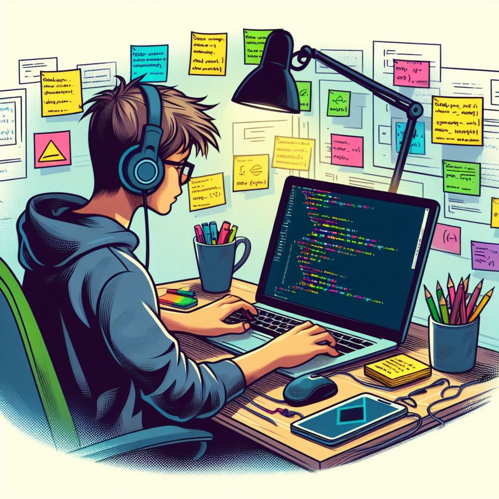
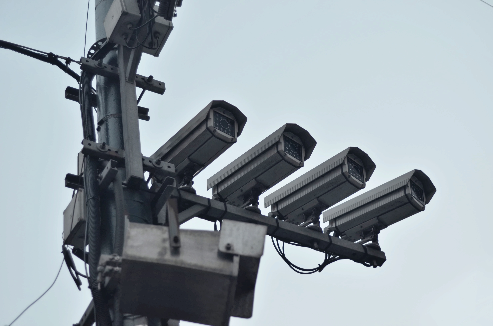
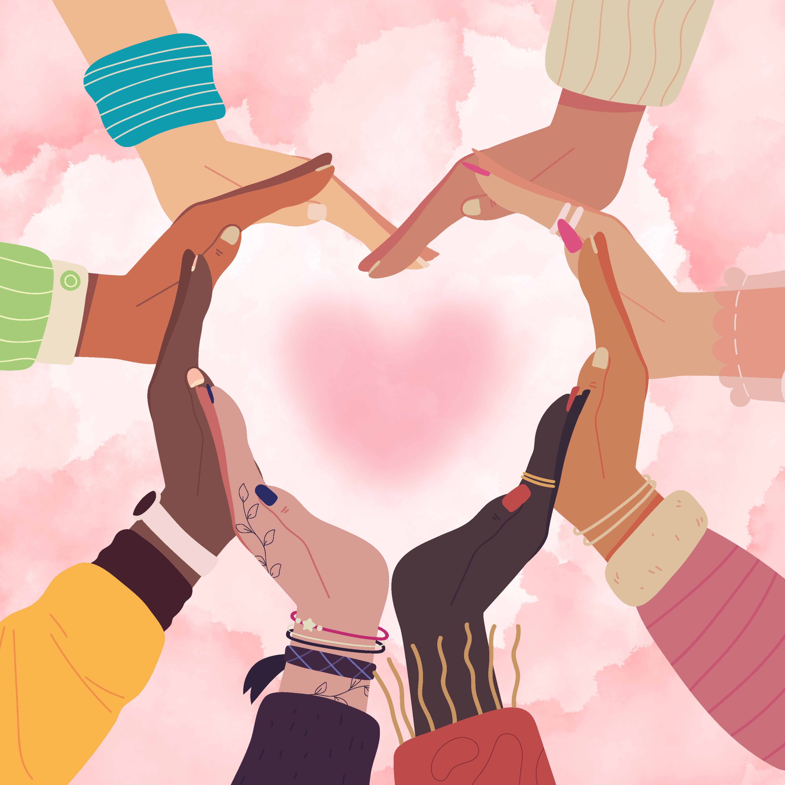

Unidad II: Responsabilidad Digital
Responsabilidad Digital
¿Qué es la responsabilidad digital?
La creciente integración de la tecnología en la vida diaria hace necesario desarrollar un uso responsable y consciente de internet.
Muchas personas utilizan internet para consultar información sobre salud, educación y otros temas importantes, por lo que es esencial aprender a utilizar correctamente las tecnologías.

Ejemplo:
Un estudiante verifica la información antes de compartirla en redes sociales para evitar difundir datos falsos.
Uso responsable de la tecnología
La tecnología facilita la comunicación y el acceso a la información, pero también presenta riesgos relacionados con seguridad, privacidad y desinformación.

![Este es un árbol estilizado con ramas que se extienden y están adornadas con varios iconos que representan diferentes aspectos de la tecnología y las redes sociales. En la parte superior, hay un icono de RSS, un portapapeles y una figura de persona. A lo largo de las ramas, se pueden ver iconos como auriculares, un pájaro, el logotipo de Facebook, un candado abierto, un icono de Twitter, una calculadora, un pulgar hacia arriba, un corazón, una cámara, un globo terráqueo, un icono de búsqueda, un ordenador, un ratón de ordenador, un icono de compartir, un sobre, un candado cerrado, una cámara de vídeo, un ojo, un teléfono y un carrito de compras. El árbol tiene un tronco oscuro y las ramas se curvan y entrelazan, creando una composición visualmente atractiva. El fondo es un degradado suave de color crema a gris, lo que hace que los iconos coloridos resalten. La imagen evoca la idea de la interconexión y la abundancia de información y servicios disponibles en el mundo digital.](./assets/images/responsa17.jpg)
La responsabilidad digital implica utilizar internet de manera ética, segura y respetuosa.
Ejemplo:
Una persona configura contraseñas seguras y evita ingresar a sitios web sospechosos.
Ética Digital
Introducción a la ética digital
La ética digital estudia los comportamientos responsables y respetuosos relacionados con el uso de tecnologías digitales.
Ejemplo:
Un estudiante participa en un foro virtual respetando las opiniones de los demás participantes.
Respeto a los derechos de autor
Antes de utilizar contenido encontrado en internet, es importante verificar si puede reutilizarse correctamente y dar crédito a sus autores.
Ejemplo:
Un estudiante utiliza una imagen encontrada en internet e incluye el nombre del autor en su presentación.
Protección de la privacidad
Publicar información personal en internet puede representar riesgos para la seguridad y privacidad de las personas.

![Este icono minimalista representa la seguridad y la protección de datos genéticos, con una cadena de ADN estilizada sobre un candado cerrado dentro de un círculo azul.
La composición del icono es simétrica y centrada, con el candado ocupando la parte inferior y la estructura del ADN curvándose por encima, creando una sensación de equilibrio y unidad visual. El ADN y el candado interactúan visualmente, sugiriendo que el candado está protegiendo o asegurando la información genética representada por la doble hélice. Los elementos están claramente definidos, asegurando una fácil identificación de su significado simbólico. El círculo azul actúa como un contorno que contiene y unifica los elementos gráficos, dándole un aspecto de insignia o sello.
El sujeto principal es un candado de estilo gráfico moderno, representado en blanco sólido con un ojo de cerradura distintivo en su centro, lo que indica que está cerrado y seguro. Por encima del candado, se encuentra una representación simplificada de una cadena de ADN. Esta hélice está dibujada con líneas blancas nítidas, mostrando la doble espiral característica con travesaños verticales que simulan las bases nitrogenadas. La representación del ADN es estilizada, enfocándose en su estructura reconocible más que en el detalle biológico.
El medio artístico es una ilustración digital, probablemente creada con software de diseño vectorial, lo que garantiza líneas limpias y escalabilidad sin pérdida de calidad. El estilo es minimalista y moderno, utilizando formas geométricas simples y colores planos. La ejecución técnica se caracteriza por la claridad y la concisión, donde cada elemento está cuidadosamente diseñado para transmitir su significado de manera efectiva. La elección creativa de superponer el ADN sobre el candado es una metáfora visual directa que comunica la idea de seguridad genética. Los bordes son nítidos y los colores sólidos contribuyen a un aspecto limpio y profesional.
El entorno del icono es abstracto, limitado a un círculo azul brillante que sirve de fondo. Este fondo azul intenso proporciona un contraste suficiente para que los elementos blancos del candado y el ADN destaquen claramente, mejorando la legibilidad y el impacto visual. Las condiciones de iluminación son uniformes, sin sombras ni gradientes, lo que refuerza el estilo plano y minimalista. El color azul puede evocar sensaciones de confianza, tecnología y profesionalismo, mientras que el blanco simboliza pureza y seguridad. En conjunto, estos elementos ambientales crean una atmósfera de fiabilidad y protección en el ámbito de la información genética.](./assets/images/responsa18.svg)
![Una imagen 3D conceptualiza la seguridad de datos dentro de Europa, con un candado negro flotando sobre un mapa estilizado de Europa rodeado por las estrellas de la bandera de la Unión Europea sobre un fondo de código binario.
La composición de la imagen es centralizada, con el candado y las estrellas formando un círculo alrededor de este, que a su vez está posicionado sobre un mapa de Europa. Las estrellas están dispuestas de forma circular, simulando la bandera de la Unión Europea, y el candado se encuentra en el centro del círculo, sugiriendo control o protección. El mapa de Europa se muestra como una silueta azul oscura y sombreada, con una capa de código binario (0s y 1s) superpuesta, lo que añade una dimensión digital y tecnológica a la escena. El encuadre es un plano medio que permite apreciar los elementos principales y su relación espacial.
El sujeto principal es un candado negro, representado en 3D, con un diseño estilizado y moderno. Tiene una forma cuadrada con un arco de cierre distintivo, y se presenta flotando en el aire, lo que le confiere una sensación de importancia y aislamiento. A su alrededor, se encuentran doce estrellas amarillas, también renderizadas en 3D, que evocan el símbolo de la Unión Europea. Estas estrellas parecen estar ligeramente elevadas del plano inferior y dispuestas en un patrón circular alrededor del candado.
La imagen es una ilustración digital 3D, caracterizada por superficies lisas y un sombreado suave que resalta la tridimensionalidad de los objetos. El estilo es limpio y minimalista, enfocado en la transmisión de un concepto claro a través de símbolos visuales. La paleta de colores se limita principalmente a azules profundos, negro y amarillo vibrante, creando un contraste nítido y una estética tecnológica. La ejecución técnica es precisa, con un renderizado que permite ver el brillo y las sombras sutiles en las superficies del candado y las estrellas.
El entorno es abstracto y simbólico. El fondo presenta un mapa de Europa en tonos azules oscuros, con una textura de código binario que evoca el mundo digital y la información. Las sombras proyectadas por el candado y las estrellas sobre el mapa de Europa añaden profundidad y realismo a la escena, a pesar de su naturaleza conceptual. La iluminación parece provenir de una fuente superior y lateral, creando un brillo suave en los bordes de los objetos y acentuando su forma. El ambiente general es serio, tecnológico y sugiere temas de seguridad, protección de datos y soberanía digital en el contexto de la Unión Europea.](./assets/images/responsa19.jpg)
Es recomendable reflexionar antes de compartir fotografías, ubicaciones o datos personales.
![Una mano negra silueteada se cierne sobre un fondo abstracto de código binario digital azul y blanco, representando una barrera o entrada en el mundo digital.
La composición de la imagen es minimalista y conceptual. Una mano humana, representada en silueta negra sólida, ocupa la parte central izquierda y la mitad inferior del encuadre. Sus dedos están extendidos, dando la impresión de que está a punto de tocar o de interactuar con el fondo. El fondo consiste en una densa y repetitiva matriz de números binarios (ceros y unos) dispuestos en líneas. Los números se presentan en un degradado de tonos azules y blancos, creando un efecto de profundidad y brillo que sugiere una pantalla o una corriente de datos. La mano actúa como un elemento discordante, un elemento físico que contrasta con la naturaleza digital y abstracta del fondo. El encuadre es cercano a la mano, lo que enfatiza su presencia y la hace parecer una barrera o una entrada en este universo binario. No hay otros elementos que distraigan, permitiendo que la interacción conceptual entre la mano y el código sea el foco principal.
El sujeto clave es la silueta negra de una mano humana, con los cinco dedos extendidos. La ausencia de detalles internos hace que la mano sea un símbolo universal de intervención humana, control, o el acceso a un sistema. Su opacidad y color negro puro la distinguen claramente del fondo brillante y multicolor. La mano está posicionada de tal manera que parece flotar o interponerse en el flujo de información digital.
El medio es digital, con un estilo gráfico que recuerda a las representaciones abstractas de tecnología e información. La ejecución técnica es limpia y directa, utilizando la silueta como una herramienta gráfica fuerte para transmitir un mensaje. El estilo es moderno y conceptual, enfocándose en la idea más que en el realismo. Las elecciones creativas giran en torno al contraste entre lo orgánico (la mano) y lo artificial (el código binario), y la implicación de la presencia humana dentro de los sistemas digitales.
El escenario es abstracto, compuesto enteramente por código binario. Los números forman un patrón dinámico y brillante, con transiciones de color que van del azul profundo al blanco luminoso, sugiriendo iluminación desde atrás o un efecto de brillo intrínseco. Este fondo digital crea una atmósfera de misterio, complejidad y el vasto mundo de la información. Las condiciones de iluminación, aunque abstractas, crean un contraste dramático entre la oscuridad sólida de la mano y la luminosidad del código, generando una sensación de intriga y anticipación. El ambiente general es tecnológico, futurista y ligeramente enigmático, evocando la omnipresencia de los datos y la interacción humana con ellos.](./assets/images/responsa20.jpg)
Ejemplo:
Una adolescente evita publicar su dirección, número telefónico o ubicación exacta en redes sociales.
Veracidad y objetividad
La información compartida en internet debe basarse en fuentes verificables y evitar la difusión de noticias falsas.
Ejemplo:
Antes de creer una noticia encontrada en internet, una persona la compara con varias fuentes confiables.
Respeto a la diversidad e inclusión
Es importante evitar comportamientos discriminatorios y promover espacios digitales inclusivos y respetuosos.


![La imagen presenta una multitud diversa de personas, todas mirando hacia el espectador, con la mayoría de sus rostros claramente visibles. Las personas son de diversas etnias, edades y géneros, y muchas llevan sonrisas amables. Están agrupadas en primer plano y en planos intermedios, creando una sensación de comunidad y cercanía. La composición es densa, con un gran número de personas que llenan el encuadre, y no hay un fondo distintivo más allá de un degradado sutil de colores cálidos en la parte superior de la imagen.
Los colores son vibrantes y cálidos, con predominancia de tonos naranjas, rosas, azules y verdes en la ropa de las personas, y tonos de piel variados. La técnica de pintura, que recuerda a la acuarela, da a la imagen una textura suave y un aspecto ligeramente difuminado, especialmente en los bordes y las transiciones de color. Las líneas son definidas pero suaves, dando a cada persona una identidad única dentro de la colectividad.
Las expresiones faciales son positivas y acogedoras, transmitiendo un mensaje de unidad y diversidad. Los detalles, como las arrugas alrededor de los ojos de las personas mayores, el brillo en sus ojos y la forma en que la luz incide en sus rostros, añaden realismo y profundidad a las representaciones. Se observan diferentes tipos de peinados y coberturas para la cabeza, como turbantes, gorras y cabello suelto, lo que refuerza la diversidad.
La perspectiva es frontal, colocando al espectador en el centro de la escena, como si fuera parte de la multitud o estuviera siendo saludado por ella. Las cabezas y torsos de las personas son lo que más se ve, y algunas personas están ligeramente superpuestas, creando profundidad. A pesar de la gran cantidad de individuos, no hay una figura central dominante, sino un sentido de igual participación en el grupo. En resumen, la imagen celebra la diversidad humana a través de un retrato grupal optimista y colorido](./assets/images/responsa23.jpg)
Ejemplo:
Los integrantes de un grupo virtual respetan las opiniones y características culturales de todos los participantes.
Diálogo y pensamiento crítico
El debate responsable y la reflexión ética ayudan a desarrollar pensamiento crítico sobre el uso de medios digitales.
![La imagen representa dos figuras humanoides en un espacio etéreo y abstracto. En el lado izquierdo, una figura femenina, translúcida y de color claro, está sentada con las piernas cruzadas y una mano apoyada en la barbilla, en una pose pensativa. Su cuerpo es suave y orgánico, con contornos difusos.
En el lado derecho, una figura humanoide masculina, también translúcida pero con un brillo azulado y una textura de puntos o partículas luminosas, está sentada en una pose similar, mirando hacia la figura femenina. Se observa un punto de luz brillante en la cabeza de esta figura masculina, similar a una bombilla o un halo de energía.
El fondo es una mezcla de colores cálidos y fríos, con tonos anaranjados, dorados y azules que se funden suavemente, evocando una atmósfera cósmica o espiritual. Hay pequeñas luces dispersas que simulan estrellas o partículas de energía.
En los extremos de la imagen, tanto a la izquierda como a la derecha, se observan estructuras abstractas que parecen líneas curvas y entrelazadas, de color rojizo a la izquierda y azulado a la derecha, que enmarcan la escena y sugieren algún tipo de conexión o patrón energético.
La composición es simétrica en cuanto a la disposición de las figuras, pero asimétrica en cuanto a sus características y coloración, creando un contraste visual interesante. El suelo sobre el que se sientan las figuras es reflectante, creando un reflejo vívido de ambas figuras y del entorno, lo que duplica la sensación de espacio y profundidad. Los reflejos son de colores cálidos y fríos, mezclándose en la superficie pulida. La iluminación general es suave y difusa, con puntos de luz más intensos emanando de las figuras y del fondo. La imagen transmite una sensación de conexión, meditación, trascendencia o comunicación interdimensional.](./assets/images/responsa24.jpg)
![La imagen presenta un diseño simétrico y conceptual sobre un fondo gris claro uniforme. Muestra dos perfiles humanos de cabeza y cuello, uno a la izquierda y otro a la derecha, mirando uno hacia el otro. Las siluetas de los rostros y cuellos son negras sólidas, lo que resalta los detalles neuronales y cerebrales que se representan en el exterior de estas siluetas.
La silueta de la izquierda está delineada por un contorno brillante y translúcido de color amarillo dorado. Este contorno sigue la forma de la cabeza, cerebro y cuello, mostrando una intrincada red de líneas que representan nervios y vasos sanguíneos. Dentro de la cabeza negra, se pueden apreciar las distintas partes del cerebro, como la corteza, el cerebelo y el tronco encefálico, también delineadas con el mismo color amarillo. El cuello muestra una representación esquemática de las vértebras cervicales, también en amarillo.
La silueta de la derecha está delineada de manera similar, pero con un contorno de color azul eléctrico. Este contorno también detalla la estructura craneal, el cerebro y el cuello. El cerebro dentro de la silueta negra está representado con las mismas estructuras anatómicas que en el lado izquierdo, pero delineadas en azul. El cuello con las vértebras cervicales también está representado en azul.
La composición es equilibrada, con ambas figuras ocupando aproximadamente la mitad izquierda y derecha de la imagen, respectivamente. El espacio vacío entre las dos cabezas crea una sensación de diálogo o conexión visual entre las dos representaciones. El estilo es limpio y moderno, con un ligero sombreado en los contornos que les da un aspecto tridimensional y brillante. La imagen parece simbolizar la comunicación, la cognición, la dualidad del pensamiento o incluso las diferencias y similitudes en los sistemas nerviosos o procesos mentales.](./assets/images/responsa25.jpg)
Ejemplo:
Dos estudiantes debaten sobre el uso de la inteligencia artificial presentando argumentos fundamentados y escuchando diferentes puntos de vista.
Políticas y reglamentos digitales
Las instituciones y plataformas digitales deben establecer normas claras para promover el uso ético de la tecnología.
![La imagen muestra un diseño estilizado que evoca la bandera de la Unión Europea y un icono relacionado con la seguridad en la nube. El fondo es de un azul oscuro, vibrante, similar al de la bandera europea. Dispuestas en un círculo alrededor del centro de la imagen, hay doce estrellas amarillas, también representando la bandera de la UE. Estas estrellas tienen un ligero sombreado que les da una apariencia tridimensional, como si estuvieran ligeramente elevadas sobre el fondo azul.
En el centro de la composición, se encuentra una nube blanca, también con un sutil sombreado para darle volumen. Dentro de la nube, hay un icono de un candado cerrado de color negro, que simboliza la seguridad y la protección. A la derecha del candado, dentro de la misma nube, hay un círculo verde con una marca de verificación blanca en su interior, lo que sugiere aprobación, conformidad o que la seguridad está garantizada.
La composición es simétrica y se centra en el elemento central de la nube con los iconos. Los colores son primarios y contrastantes: el azul oscuro del fondo, el amarillo brillante de las estrellas y el blanco y negro del icono principal, con el toque verde de la marca de verificación. La iluminación parece ser uniforme, con sombras suaves que realzan la tridimensionalidad de los elementos. La imagen transmite un mensaje de seguridad, protección de datos y posible cumplimiento de normativas dentro del contexto de la Unión Europea, dado el uso de sus símbolos. El estilo es limpio y moderno, típico de un diseño gráfico conceptual.](./assets/images/responsa26.png)
![Cuatro puños cerrados se sitúan en el centro de la imagen, formando un círculo compacto y unificado. Cada puño pertenece a una persona diferente, como indican los distintos tonos de piel y las mangas de sus camisas. El puño superior izquierdo pertenece a una persona que lleva una camisa blanca con finas rayas verticales. El puño superior derecho pertenece a alguien con una camisa blanca con un sutil estampado de lunares. El puño inferior izquierdo es de una persona con una camisa blanca lisa, mientras que el puño inferior derecho pertenece a alguien que lleva una camisa azul claro. Las manos están firmemente entrelazadas, lo que sugiere fuerza, colaboración y determinación.
Rodeando el grupo central de puños hay cuatro estandartes morados diagonales que se cruzan entre sí, formando una X. Cada estandarte lleva la palabra «cambio» escrita en una fluida letra cursiva blanca. Los estandartes morados tienen un aspecto texturizado y cepillado, lo que les da un aire dinámico y algo artístico.
El fondo es predominantemente blanco, pero está superpuesto por intrincadas líneas negras que se asemejan a vías neuronales o a una red en forma de telaraña. Estas líneas son más densas alrededor de los bordes de la imagen y parecen irradiar hacia afuera desde el centro, creando una sensación de complejidad y conectividad. En el centro mismo, donde se unen los puños, hay una pequeña ilustración blanca de un cerebro humano, representada en un estilo sencillo, similar a un boceto.
Traducción realizada con la versión gratuita del traductor DeepL.com](./assets/images/responsa27.jpg)
![La imagen es una representación gráfica abstracta con temática legal. En el centro, un círculo de color verde azulado oscuro contiene un apretón de manos entre dos personas vestidas con trajes negros y camisas blancas. Detrás del apretón de manos, se visualiza un documento con líneas horizontales negras que simulan texto, y un sello o certificado de color azul oscuro con una cinta roja.
El fondo está compuesto por un patrón repetitivo de símbolos de párrafo (§) en varios tonos de verde azulado y azul claro. Estos símbolos están esparcidos de forma irregular, algunos son más grandes y opacos, mientras que otros son más pequeños y translúcidos, creando una sensación de profundidad y movimiento. También hay formas geométricas abstractas y bandas de color azul y verde azulado translúcido que se superponen, algunas de ellas con un contorno azul marino que sugiere la forma estilizada de una balanza de la justicia.
La paleta de colores predominante es una gama de verdes azulados, azules y blanco, con toques de negro y rojo. La composición es simétrica en torno al círculo central, pero el patrón de fondo introduce una sensación de dinamismo y dispersión. La iluminación es uniforme y digital, sin sombras pronunciadas, lo que refuerza la naturaleza gráfica e ilustrativa de la imagen. La imagen parece destinada a representar conceptos como acuerdos legales, contratos, justicia o derecho.](./assets/images/responsa28.jpg)
Ejemplo:
Una institución educativa establece normas para el uso adecuado de computadores y plataformas virtuales dentro de la escuela.
Juego de completar palabras sobre ética digital
Actividad interactiva de adivinanzas relacionada con la ética en el uso de tecnologías.
Juego de completar palabras sobre ética digital
Actividad interactiva de encuestas relacionada con la ética en el uso de tecnologías.
Juego de Verdadero o Falso
Juego interactivo sobre productos tecnológicos digitales.